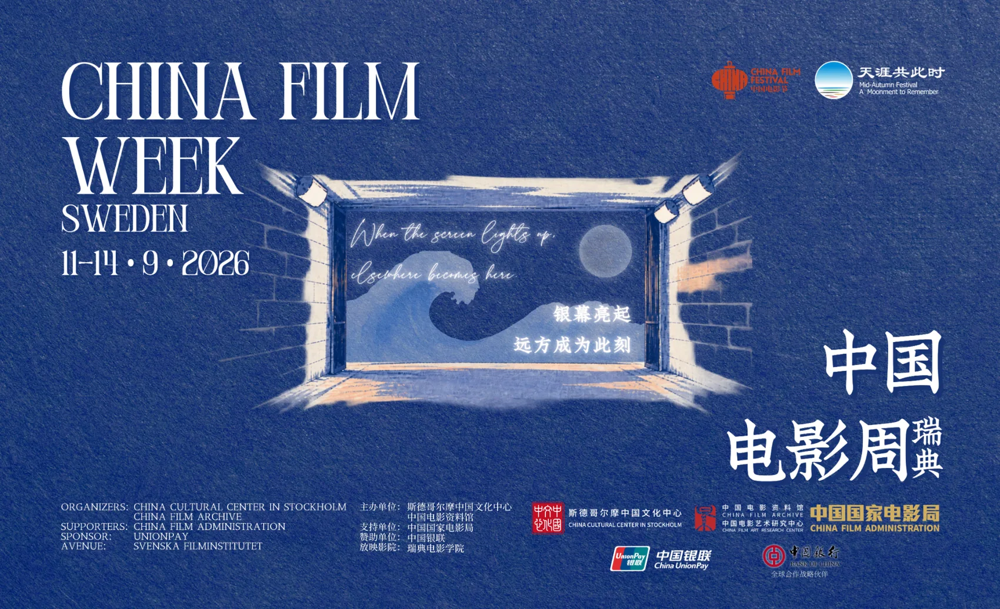
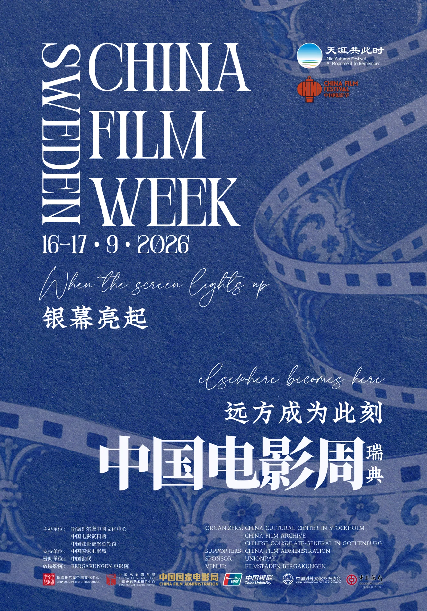
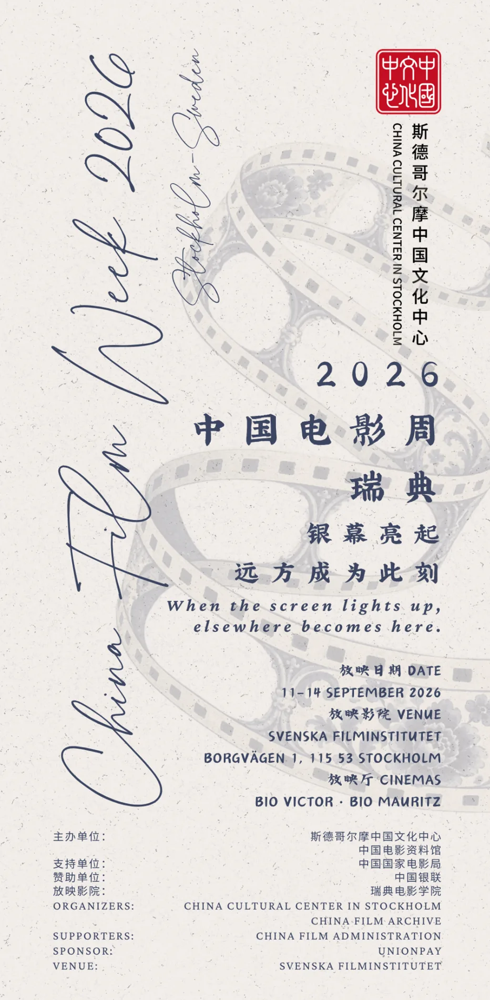
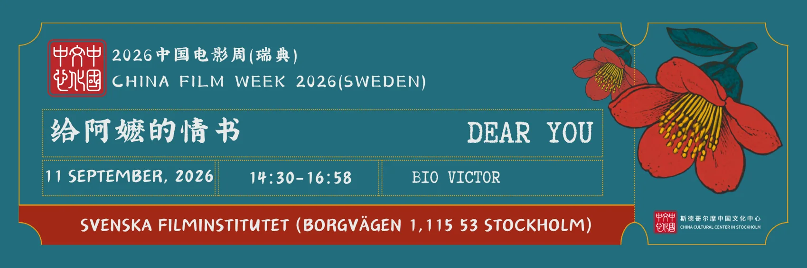
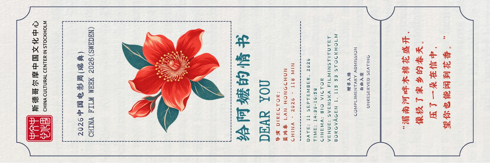

Selected creative & cultural work.
Cultural communication, exhibition planning, visual design and documentary research.
China Film Week 2026 · Sweden
Designed event posters, commemorative ticket stubs, a photo check-in wall and promotional WeChat article layouts for China Film Week 2026. The materials carried the festival's visual identity across print, social media and audience-facing event spaces.
The following five designs are examples of my own work. Institutional logos and festival partners belong to their respective organisations.





Yongle Palace Mural Art Exhibition
Assisted with guided exhibition tours and interpretation for visitors, communicating the cultural background and visual details of the Yongle Palace murals. Also supported on-site video filming and related event communication.
External materials provided by the contributor; dates and individual credits in these posts have not been independently verified.
Looking China · 10th Anniversary Exhibition
Contributed to the thematic planning and programme drafting for the Looking China International Youth Film Project's 10th Anniversary Exhibition. Worked on communications across WeChat, Weibo, Bilibili and Facebook, including regular WeChat editorial production and audience-metric-informed content strategy.
“Lingji participated in the co-curation of the Looking China 10th Anniversary Exhibition, engaging in thematic planning and program drafting.”
Prof. Austin Jun Luo · Vice Dean, Academy for International Communication of Chinese Culture, Beijing Normal University
Supervisor description of the exhibition work. The complete recommendation letter is not publicly hosted.
External project-related articles. Article titles and individual credits have not been independently verified.
Documentary research & production
Supported archival material gathering, script development and factual verification for Breaking Dawn: The Secret Archives of Chongqing Liberation.
Footage supplied from the user's documentary work archive. Film title, production location and individual production credits are not verified from the clips alone.
The previous Academic CV names Chongqing Tongliang Integrated Media Centre. Materials described as Beibei productions will be added separately once their production credit is confirmed.